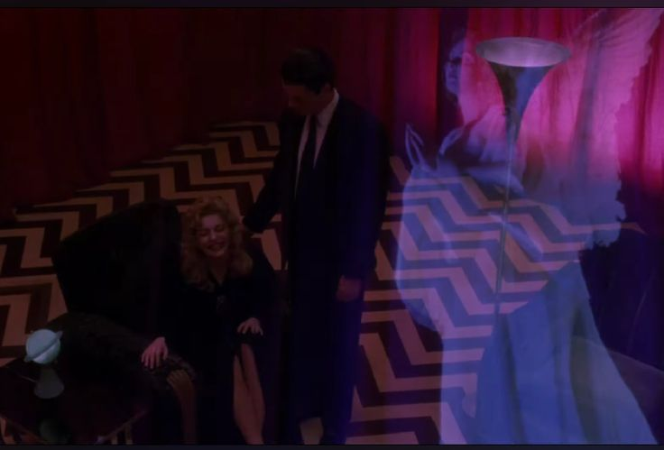

Psychological Horror in Television
What Makes Psychological Horror Unique?
Psychological Horror in television creates itself by unsettling the audience through atmosphere, character depth, and moral ambiguity. Unlike traditional horror, which relies on jump scares, this genre digs into the mind, exploring fear through tension and dread. Shows like Twin Peaks use small-town mysteries to create unease in the viewer; while shows Hannibal delves into the complex relationship between Hannibal Lector and Will Graham. The popularity of the shows hinge on creating love for the protagonists through the complex feelings they exert as a result of their current or past events. It’s the emotional weight felt by the viewer that makes psychological horror so gripping.
Key Examples in Television
Twin Peaks (1990-2017) redefined horror with its surreal mystery, set in a small town where Laura Palmer’s murder unraveled the town's supernatural secrets. The uneasy feeling of the Black Lodge with it's red curtains combined with the reversed speech of it's inhabitants added on to the already horrifying murder of Laura Palmer. Meanwhile, Yellowjackets (2021-2025) uses the psychological distress created by being stranded following a plane crash, and places it on a group of highschoolers as they are forced to navigate their new lives in the wilderness. The group is forced to resort to barbaric ways of living, one of the most integral being the cannibalism of their friend & classmate, Jackie Taylor, marking a turning point for the group as they throw away all their humanity just to survive. The show changes the thriller aspects of the majority of 'stranded' type shows into a psychological deep dive into how it can affect a young brain permanantly. Both of these showscase the deep emotions, decisions, and feelings that the characters express which is allows them to capture the interest of millions of viewers.
